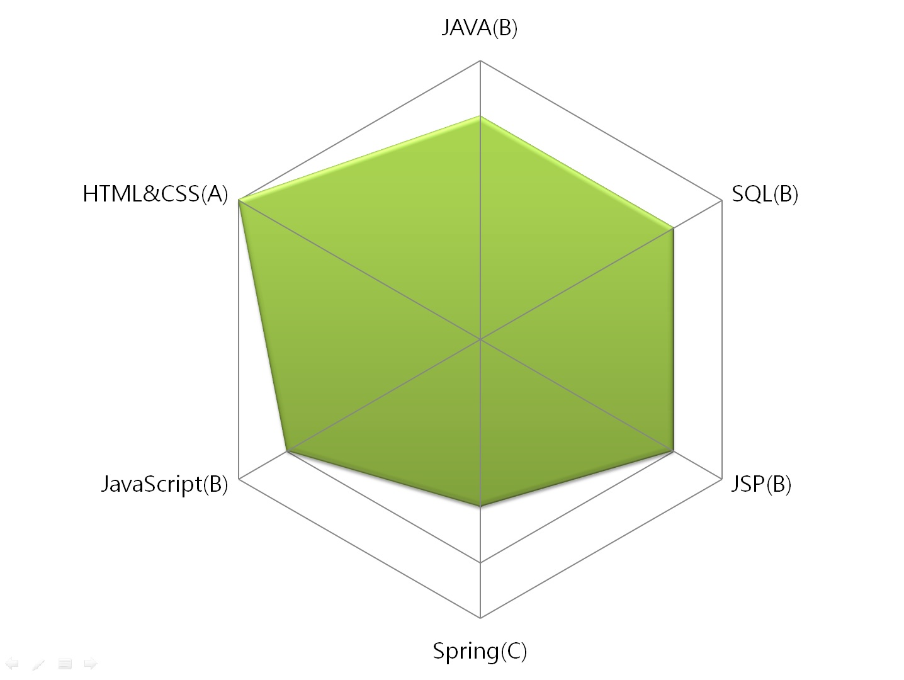

EDUCATION
한국방송통신대학교 컴퓨터과학과 졸업
구디아카데미 전자정부표준프레임워크 수료
동양미래대학교 정보전자과 졸업
LICENSE
정보처리기사
컴퓨터활용능력 2급
정보기술자격(ITQ)-한글파워포인트A급
SKILLS

- A: 이론 및 기술을 충분히 숙지하고 적용할 수 있음.
- B: 이론의 숙지는 다소 미흡하지만 기술 적용에는 문제없음.
- C: 이론 및 기술이 다소 미흡하지만 책이나 매뉴얼을 통해 적용이 가능함.